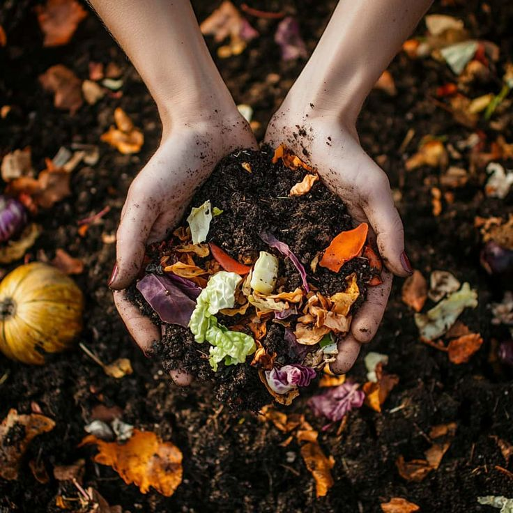
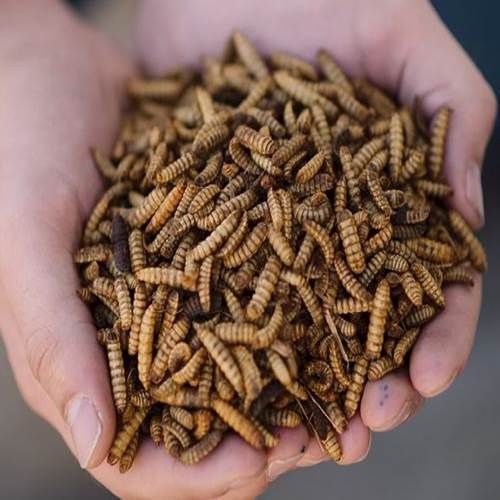
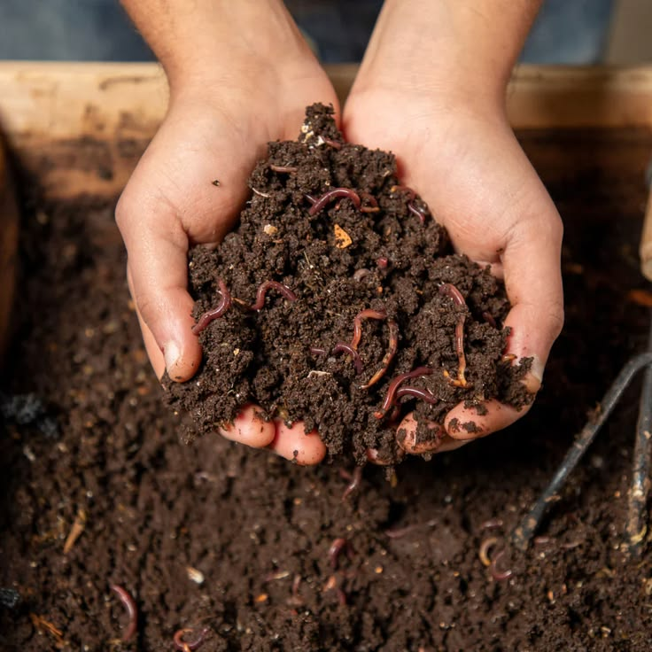
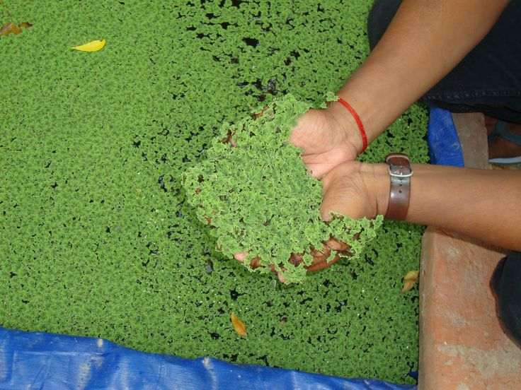
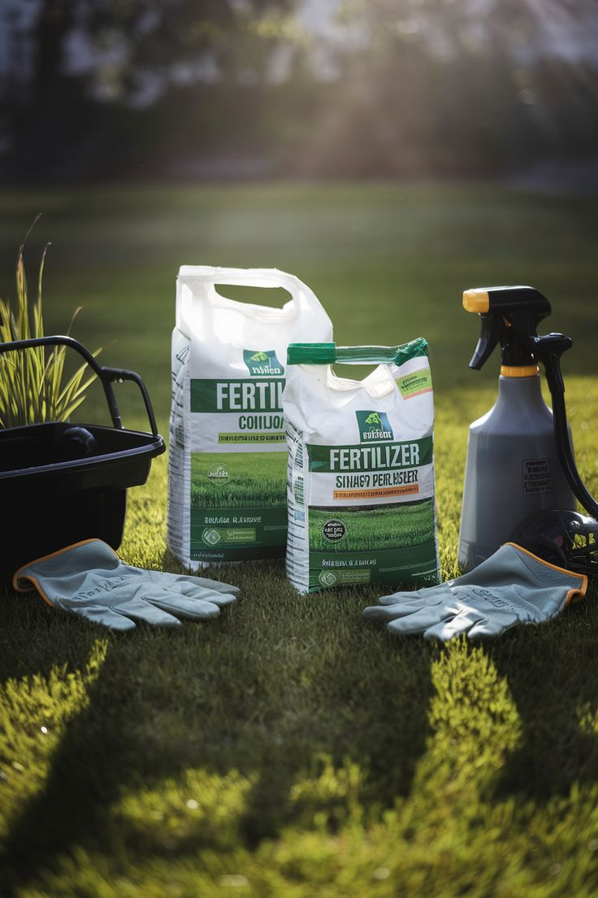
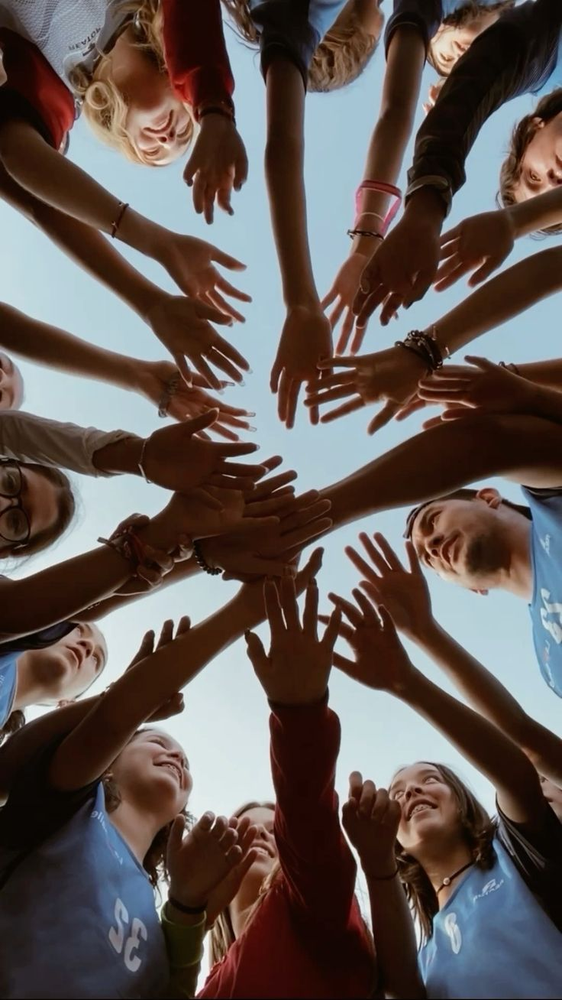
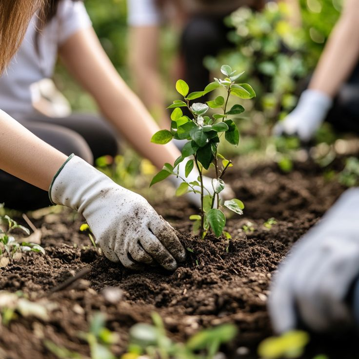
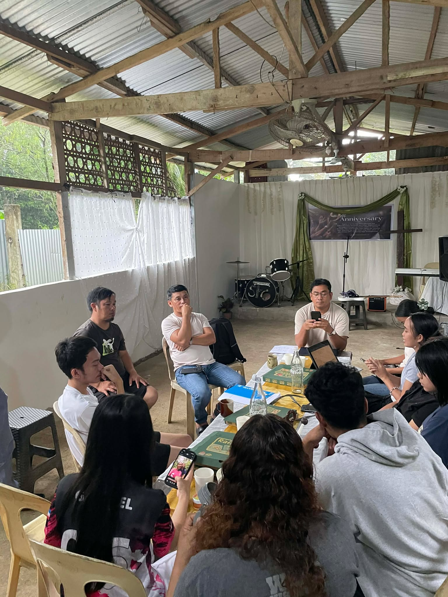
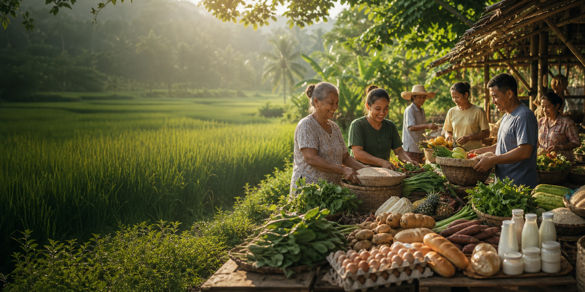

Sustainable Practices
We promote sustainable practices that protect the environment and support food security.
Youth-led sustainable farming
Young Ag-Quapreneurs Integrated Farming Association (YAIFA)
YAIFA is a youth-led organization committed to empowering young people through sustainable agriculture and aquaculture. We believe that when the youth are given the right opportunities, training, and values, they can build a better future for themselves, their families, and their communities.
Who we are
A youth-driven association passionate about agriculture, aquaculture, and community development.
We promote sustainable practices that protect the environment and support food security.
We provide young people with skills, training, and opportunities to build profitable and meaningful livelihoods.
We are committed to sharing the gospel and building discipleship among the youth through our programs and projects.
Mission
To create opportunities to reach the younger generation and share the gospel, empowering them through profitable and sustainable aquaculture.
Vision
To see young people disciplined, equipped, and empowered to engage in profitable and sustainable aquaculture.
Goal
To reach and share the gospel while providing opportunities for a sustainable livelihood.
Our project
Our R&D project focuses on developing innovative and sustainable agricultural solutions that convert organic waste into valuable products.
Through research, testing, and continuous improvement, we aim to create high-quality feeds, fertilizers, and soil enhancers for local farmers and fish raisers.

Collection and utilization of locally available organic waste and resources

A sustainable high-protein source for feed development

Converting organic waste into nutrient-rich organic fertilizer

A sustainable and locally available plant-based protein source

Developed feeds, organic fertilizers, and soil enhancers
Our R&D ensures quality, sustainability, and profitability while creating opportunities for young people and supporting our community.
Identify problems, opportunities, and possible solutions.
Test different methods and materials.
Analyze results and measure performance.
Refine processes and formulations.
Produce high-quality products for the community.
Empower youth, support farmers, transform lives.
Research with purpose
Our research turns local resources and practical ideas into solutions that strengthen livelihoods, protect the environment, and help communities thrive.
Creates practical solutions using accessible, low-cost materials.
Reduces farming and feeding expenses through efficient alternatives.
Improves performance and income for farmers and fish raisers.
Promotes circular practices that reduce waste and protect resources.
Builds knowledge, confidence, and practical skills among young people.
Supports resilient communities and dependable local food systems.

01Young people are trained, equipped, and given real livelihood opportunities.

02Provides a stable source of income for members and local communities.

03Families and communities benefit from sustainable agriculture and aquaculture.
We reach the youth with the gospel and help them grow in faith and purpose.
Youth & activities
A space for moments from YAIFA’s youth training, farming activities, research, community programs, and shared experiences.



Suggested photo categories
Youth trainingFarm activitiesAquacultureR&DCommunity outreachDiscipleshipLocation & Contact Details
Visit our project site, contact our team, or follow Young Ag-Quapreneurs on Facebook for updates about our youth programs and activities.
Visit our Facebook page